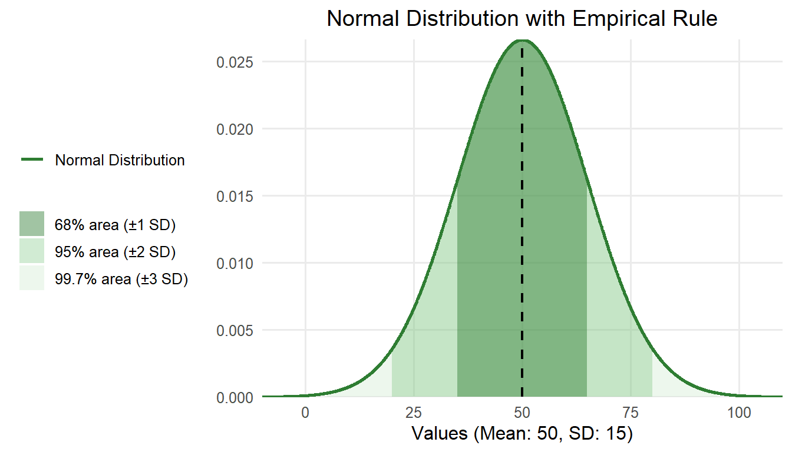
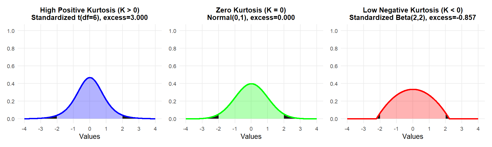
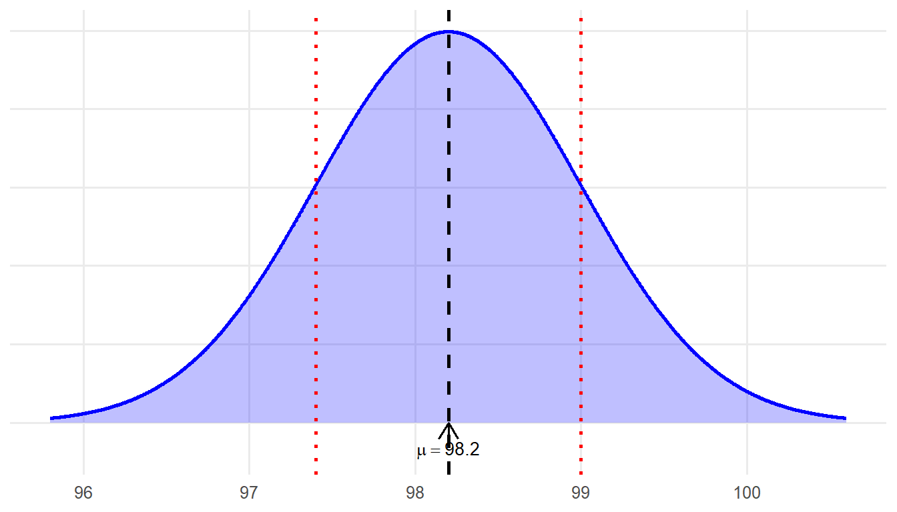
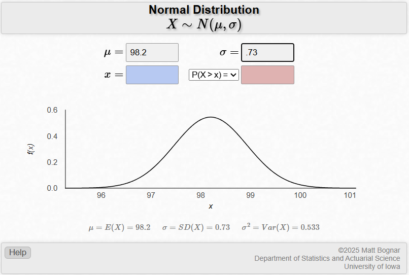
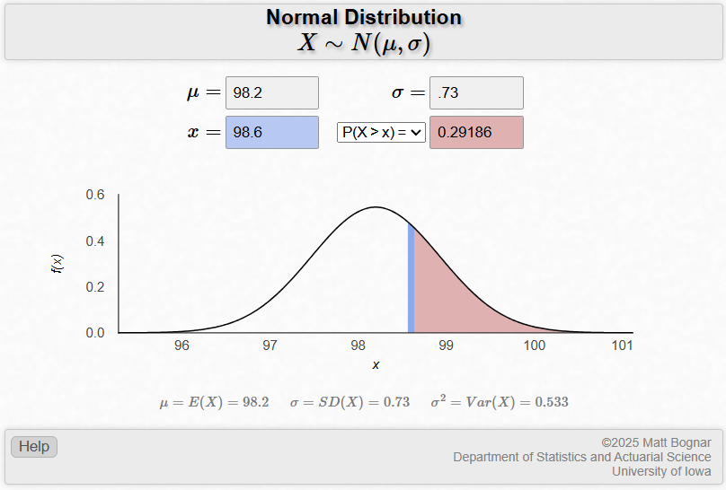
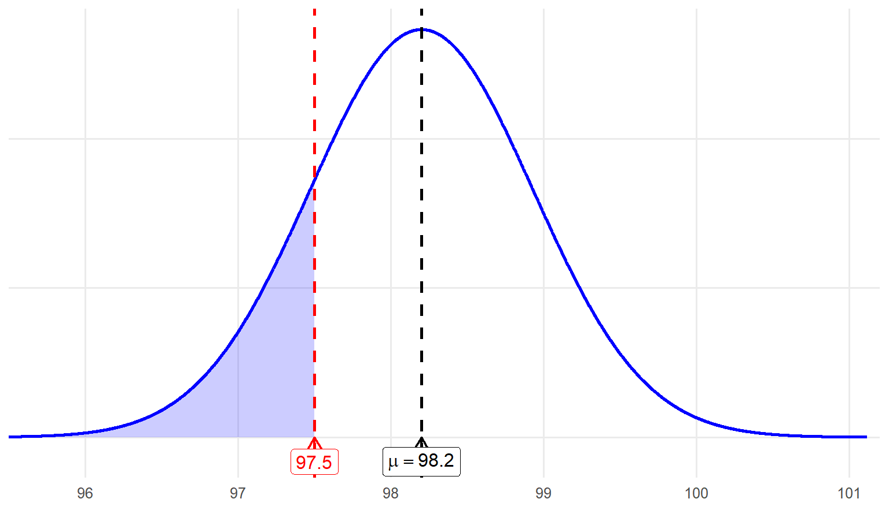
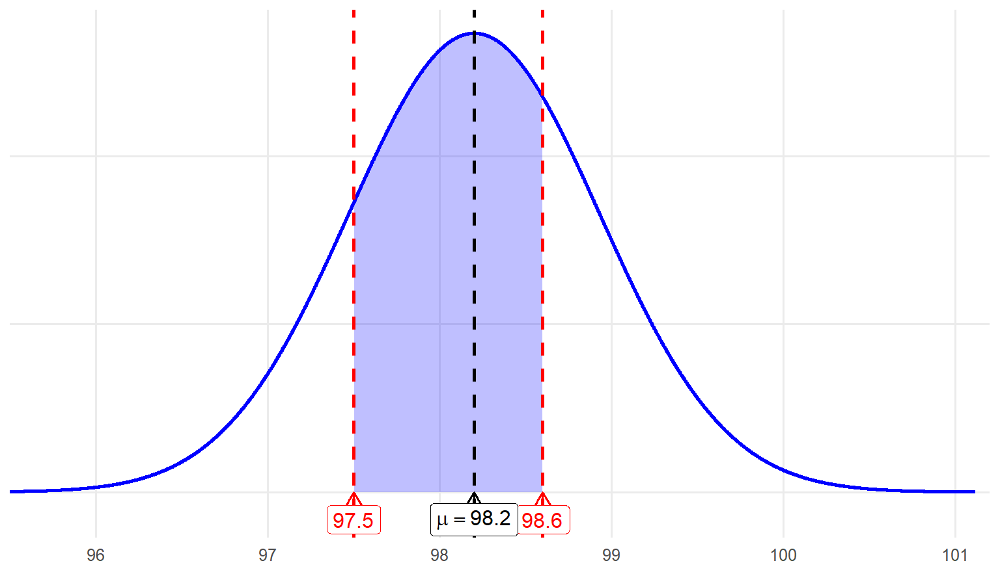
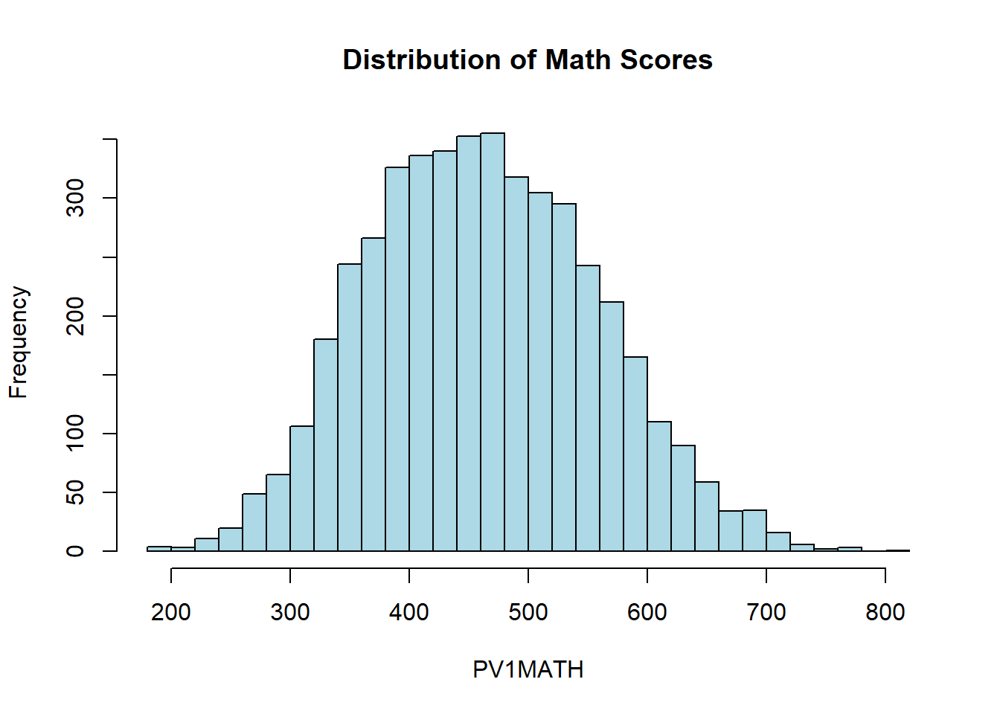

5 Chapter 5
The Normal Distribution
Learning Objectives
By the end of this chapter, you will be able to:
Identify the defining characteristics of a normal distribution.
Compute z scores from raw data and interpret their meaning in terms of standard deviations from the mean.
Use the properties of a normal distribution to calculate probabilities and interpret results for real-world scenarios using z tables and statistical software or applets.
The objectives for this chapter are to learn about the normal distribution, sometimes called the bell curve due to its shape, and to understand the concepts of probability associated with the normal distribution. An understanding of the normal distribution is very important because we use what we know about the normal distribution to make inferences about populations based on samples.
5.1 What is a Normal Distribution?
A normal distribution, or bell-shaped distribution, has the following characteristics:
The shape is symmetric, unimodal, and bell-shaped.
The mean, median, and mode are the same—all are right in the center of the distribution.
Following the empirical rule, approximately 68% of the values in a normal distribution fall within 1 standard deviation of the mean, approximately 95% of the values fall within 2 standard deviations of the mean, and approximately 99.7% of the values fall within 3 standard deviations of the mean.
For example, suppose a class took a science test and their scores were normally distributed. The distribution of student scores had a mean of 50 points (the center of the normal distribution) and a standard deviation of 15 points. Based on the empirical rule, you know that about 68% of the students scored between 35 (1 SD below the mean) and 65 (1 SD above the mean) points.

It is important to understand the characteristics of the normal distribution not only because certain variables (e.g., weight, height, test scores) are likely to have normal distributions, but because many of the statistical techniques used to make inferences about populations rely on the properties of the normal distribution.
This rule is something you can use to interpret results from normally distributed data, but it is also part of what defines a normal distribution. Not all tests that students take are normally distributed. In those cases, the empirical rule would not apply.
Software programs like SPSS® and JASP can provide tests of normality that tell you how close your distribution is to the normal distribution. You can assess how closely your data approximate normality by examining two key statistics: skewness and kurtosis.
As we learned in chapter 2, skewness means the extent to which a curve is pulled to one side or the other. Skewness is about symmetry, or really, the lack of symmetry. In a true normal distribution, half of the data points are above the mean, and half are below. A skewed distribution has more outliers on one side of the mean.
Kurtosis measures the tailedness of a distribution, or how heavy or light the tails are compared to a normal distribution. The strict definition can be confusing. For now, think about it in terms of how likely it is that there are outliers, or extreme values, in your data. A heavy-tailed distribution will have a higher kurtosis value, and a greater percentage of scores in the distribution will be out in the tails rather than the shoulders.

Positive Kurtosis (K > 0): The blue plot represents a distribution with a narrow peak and thick tails.
Zero Kurtosis (K = 0): The green plot represents a standard normal distribution with neither exaggerated tails nor an unusually sharp peak.
Negative Kurtosis (K < 0): The red plot represents a distribution with a flatter peak and thinner tails
A true normal distribution will have skewness and kurtosis values of 0. The closer the reported values are to 0, the more normal the distribution. A common rule of thumb is that a distribution with skewness and kurtosis values between -1 and 1 can be considered approximately normal.
(fig 5.4 here)
A normal distribution can have any mean and any standard deviation – it is about the shape of the distribution, not the specific numbers. For example, if you are looking at the heights of people, the mean and standard deviation will be quite different depending on whether your sample includes all people in the United States or all kindergarten students in one elementary school. Both height distributions will likely be normal and have the same basic shape, but the average height and variation in heights will probably both be lower if we are just looking at kindergartners.
(fig 5.5)
5.2 \(z\) Scores and the Standard Normal Distribution
We often convert raw data values in a normal distribution to z scores, or standardized scores. A z score is a statistical measure that describes how far a particular data point is from the mean, center, of its distribution. Instead of describing the difference between one score and the mean in terms of points, or inches, or whatever unit was used for the original distribution, we are using standard deviation units. This allows for the comparison of scores from different distributions or scales. We do this because simply knowing the difference between one score and the overall mean doesn’t tell us much. For example, you learn you scored 5 points above the mean. Is your performance a lot better than average? Is your performance barely above average? The answer depends on the standard deviation. If the standard deviation of this distribution were 20, your score of 5 points above the mean would be considered close to average. However, if the standard deviation were only 2, your score would be considered outstanding.
Using the example above, if you scored 5 points above the mean and the standard deviation was 20, your z score would be 0.25. Your score would be a quarter of a standard deviation above the mean. However, if the standard deviation were 2, your z score would be 2.5. In this case, you would have scored 2.5 standard deviations above the mean. Remember this graph from chapter 3? Boxes have been added to illustrate our example to help visualize how far different z scores are from the mean.
(fig 5.6)
If we convert an entire distribution from raw scores to z scores, that means we are standardizing the dataset. The mean of the distribution then becomes 0, the standard deviation becomes 1, and we refer to the distribution as the standard normal distribution.
What we have discussed so far are likely the most important concepts for you to understand. The rest of this chapter will mostly involve finding areas under the normal curve by using z scores and the z table. You will also learn how you can get to the same answer using online applets.
5.2.1 Finding Areas Under the Normal Curve
Let’s say we have a continuous random variable: body temperature. Imagine that we have access to the body temperatures of a particular population (e.g., all residents of the United States), and when we graph this data, we see a normal distribution with a mean of 98.2 and a standard deviation of 0.73. Remember that we collected data from individuals who belong to a particular population (i.e., all Americans). So, these numbers (\(\mu\) = 98.2 and \(\sigma\) = 0.73 ) are not sample statistics, they are population parameters. Our normal distribution is illustrated in figure 5.7.

We now have three questions we want to answer based on this distribution.
Question #1: What is the probability that a randomly sampled individual from this population has a body temperature of 98.6 degrees or higher?
If we let X denote body temperature, we are basically asking what is the probability that X is greater than or equal to 98.6 degrees? We can equivalently express this as follows: \(P(X \ge 98.6) = \, ?\) In shorthand, \(P\) represents probability.
To answer the question, we first need to turn our random variable X into a z score. We then need to use this z score to find the area under the normal curve.
We convert X to a z score using the z transformation formula. The formula differs for a population of scores versus a sample of scores.
\(\text{Population of scores: } z = \frac{x - \mu}{\sigma}\)
\(\text{Sample of scores: } z = \frac{x - M}{SD}\)
Since we obtained information for the entire population of the United States: \(z = \frac{98.6 - 98.2}{.73} = .55\)
Our z-score is 0.55. So, we can re-express the above shorthand notation like this: \(P(X \ge 98.6) = P(z \ge 0.55) = ?\)
Therefore, the probability that we would obtain a temperature that is 98.6 degrees or higher is the same as the probability of obtaining a z score of 0.55 or higher. The probability is the area under the curve, to the right of a z score of 0.55, or to the right of the body temperature of 98.6. Figure 5.8 shows you this area—it is the area to the right of the red line.
(fig 5.8 here… need to figure out how to do the little thought cloud … :/ )
Now, let’s determine the probability of obtaining a body temperature of 98.6 or higher, which corresponds to a z score of 0.55 or above. Here, we want to introduce a free applet to help find the probability (Bognar, 2021). Enter the population mean, µ, of 98.2 and the standard deviation, \(\sigma\), of .73 to define the normal distribution as shown in Figure 5.9. You will see that the X-axis has been scaled using the specified mean and standard deviation. This is a good example of how the normal distribution can take on different values for μ and σ without changing shape.

Next, enter the value of 98.6 in the box for x. Figure 5.10 shows the output.

According to the applet, the probability of obtaining a temperature of 98.6, or a z score of 0.55, is roughly 0.29. Recall that probabilities range from 0 to 1, with the total area under the normal curve equaling 1 (or 100%). Thus, a probability of 0.29 indicates there is approximately a 29% chance of randomly selecting an individual from this population who has a body temperature of at least 98.6 degrees.
Although it is easy to use an applet to find our answer, let’s learn how to use the Standard Normal Cumulative Probability Table in the back of the book to find the answer. Remember that we are now expressing our question as follows: \(P(z \ge 0.55) = ?\)
We must go to Standard Normal Cumulative Probability Table in the back of the book and look up our z score of 0.55. The column on the far left indicates the first two values of the z score, so find 0.5. The top row indicates the next two values, so find 0.05. Follow the 0.05 column down to where it intersects the 0.5 column to find a value of .7088. This indicates the cumulative probability up to 0.55 standard deviations above the mean. Since we are interested in the area on the opposite side of 0.55 (a body temperature of at least 98.6), we subtract .7088 from 1 to get .2912 - roughly the same number given by the applet. This means that the probability of selecting an individual at random who has a body temperature of 98.6 degrees or greater is .2912, or 29.12%.
Question #2: What is the probability that a randomly sampled individual from this population has a body temperature of 97.5 degrees or lower?
Hopefully, this question will now be easy to answer. In shorthand notation, we are asking: \(P(X < 97.5) = ?\)

Now, we are looking for the probability of having a body temperature of 97.5 or below, which is represented by the left side of the red line. To answer this question, we first turn 97.5 into a z score:
\[ z=\frac{97.5-98.2}{0.73}=-0.96 \]
\[ z=\frac{X-\mu}{\sigma} \]
Let’s use the applet to find \(P(x\le 97.5) = P(z\le -0.96)\) or the probability of \(z\) is less than or equal to -0.96.

The probability that a randomly selected individual from the population has a body temperature less than 97.5 is 0.1688, or 16.9%.
Now, let’s find this probability using the Standard Normal Cumulative Probability Table. Since our z score is –0.96, find the intersection of the –0.9 row and 0.06 column. The stated value is .1685. Since we are interested in the probability of having a body temperature less than or equal to 97.5 and the table represents cumulative probability up until that point, we can simply report that value. The proportion of temperatures that fall at, or below, 97.5 is about 0.1685, or there is a 16.85% chance we would randomly sample an individual who has a body temperature of 97.5 degrees or less. Again, the value is slightly off from the one obtained from the applet due to rounding differences.
Question #3: What is the probability that a randomly sampled individual from this population has a body temperature between 97.5 and 98.6 degrees?
With this final question, we are asking: \(P(97.5 \le X \le 98.6) = ?\) Although this might seem like a more difficult question, it is actually the same basic concept. The first step is to convert both values to \(z\) scores, which we have already done. We know that 98.6 expressed as a \(z\) score is about 0.55, and 97.5 expressed as a \(z\) score is about -0.96. We have also already figured out the probability of having a temperature above 98.6, \(z\) = 0.55, and the probability of having a temperature below 97.5, \(z\) = -0.96. We know that the entire probability under the normal distribution is 1.0, so we can get to the probability of scoring between these two \(z\) scores by subtracting the probabilities we already know.
Here’s how the math works out:
\[ P(97.5 \le X \le 98.6) = 1 - P(X \le 97.5) - P(X \ge 98.6) = 1 - (0.1685 + 0.2912) = 1 - 0.4597 = 0.5403 \]
This means there is a probability of about 0.54, or 54%, that we would randomly sample an individual from this population who has a body temperature between 97.5 and 98.6 degrees.

5.3 Conclusion
Chapter 5 delved into the fundamental concepts of the normal distribution, a cornerstone of statistical analysis. It outlined the key features of this distribution, including its symmetric, bell-shaped curve, unimodal nature, and the alignment of its mean, median, and mode at the center. The chapter revisited the empirical rule (68-95-99.7%), explaining how it provides a framework for interpreting the proportion of data within one, two, or three standard deviations from the mean. Additionally, it emphasized the importance of understanding normal distribution properties for making population inferences and highlighted how skewness and kurtosis helped assess a distribution’s symmetry and the likelihood of outliers.
The chapter also introduced z scores as a way to standardize data, enabling meaningful comparisons across different datasets or scales. It explained how to calculate z scores, interpret their significance as standard deviations from the mean, and apply them in the context of the standard normal distribution, where the mean was 0 and the standard deviation was 1. Key applications, such as using z scores to compute probabilities and find areas under the normal curve, were explored through practical examples involving real-world scenarios like body temperature analysis. Tools like z tables and statistical software were presented as essential for calculating probabilities and interpreting results, building a strong foundation for further statistical methods like sampling distributions. Together, the chapter equipped readers with essential skills for understanding and applying the principles of the normal distribution in various contexts.
5.3.1 Key Takeaways for Educational Researchers from Chapter 5
Understanding the characteristics of a normal distribution (symmetry, unimodal shape, and alignment of mean, median, and mode) is important for interpreting data and essential for assessing its appropriateness for applying statistical analyses you will learn later in this book.
Skewness and kurtosis are key metrics for assessing the symmetry and tailedness of a distribution, helping researchers evaluate how closely their data approximates a normal distribution. A distribution is generally considered approximately normal when these two statistics fall within the range of -1 to 1.
The empirical rule (68-95-99.7%) helps researchers interpret the portion of data within standard deviations from the means, making it a critical tool for understanding variability of data in education research contexts.
Z scores provide a standardized measure of how far a data point deviates from the mean, expressed in terms of standard deviation units. By converting raw scores into z scores—a process known as standardization—we enable meaningful comparisons of relative positions across different datasets, even when the original scores are measured on varying scales. Understanding standardization is essential for cross-study comparisons and evaluating individual performance within a population or reference group.
Although probabilities are rarely calculated manually using z scores in practice, understanding the process provides researchers with a foundational knowledge of probability, enabling them to make population inferences and conduct hypothesis testing—essential components of quantitative analysis in educational research.
5.4 Key Definitions from Chapter 5
Kurtosis measures the tailedness of a distribution, or how heavy or light the tails are compared to a normal distribution.
Normal distribution (bell curve) is a statistical distribution that is symmetric about its mean. All three measures of central tendency (mean, median, and mode) are equal and located at the center of the distribution, and the left and right halves of the curve are mirror images of each other.
Skewness means the extent to which a curve is pulled to one side or another.
The standard normal distribution is a specific type of normal distribution that has been standardized so that the mean is 0, the standard deviation is 1, and the distribution is symmetric.
A z score (standardized score) is a statistical measure that describes how far a particular data point is from the mean of its distribution, measured in terms of standard deviations.
5.5 Check Your Understanding
A distribution with high kurtosis has lighter tails than a normal distribution.
True
False
Which of the following values for skewness and kurtosis indicates that a distribution is approximately normal?
Skewness = 0.5, Kurtosis = 2.5
Skewness = 0.25, Kurtosis = 0.5
Skewness = 1.0, Kurtosis = 3.5
Skewness = -2.0, Kurtosis = 4.0
What is the probability of a data point falling within 1 standard deviation of the mean in a normal distribution?
68%
95%
99.7%
50%
A standardized test has a mean score of 500 and a standard deviation of 100. What is the probability that a randomly selected student scores higher than 650? Use the z score formula and the standard normal distribution table to find the answer.
0.1056 (10.56%)
0.1587 (15.87%)
0.0668 (6.68%)
0.0228 (2.28%)
What is the purpose of converting raw data to z scores?
To reduce the range of the data.
To standardize data for comparison across distributions.
To eliminate outliers.
To calculate the mean and median more accurately.
Chapter 5: Exploring the Normal Distribution in R
This section demonstrates how to work with the normal distribution in R, including checking for normality, calculating skewness and kurtosis, standardizing scores (z-scores), and computing probabilities using the properties of the normal curve. We use the PV1MATH variable as an example.
# Load required package
# Load required package
library(haven)
# Load the dataset
data <- read_sav("chapter2/US_Data_22.sav") 1 Visualizing and Summarizing the Distribution
# Histogram and summary
hist(data$PV1MATH, breaks=30, main="Distribution of Math Scores", xlab="PV1MATH", col="lightblue") 
summary(data$PV1MATH) Min. 1st Qu. Median Mean 3rd Qu. Max.
188.4 391.3 457.9 461.9 528.9 819.5 As a recap, the first step in exploring a continuous variable, such as math achievement scores (PV1MATH), is to visualize its distribution and review key summary statistics. As covered in Chapters 2 and 3, these basic descriptive measures and visualizations help us quickly understand the main features of the data before proceeding to more advanced analyses.
2 Checking for Normality
library(psych)
skew(data$PV1MATH, na.rm = TRUE) [1] 0.1730788kurtosi(data$PV1MATH, na.rm = TRUE) [1] -0.3150574Interpretation: The skewness of PV1MATH is 0.17, indicating a slight right (positive) skew, meaning there are a few more high values than low values. The kurtosis is –0.32, suggesting the distribution is slightly flatter (platykurtic) than a perfectly normal distribution. Both values fall well within the range of –1 to 1, so the math scores are approximately normal, with only minor deviations from perfect symmetry and peakedness.
3 Standardizing Scores: Calculating Z-scores
# Standardize PV1MATH to obtain z-scores
z_scores <- scale(data$PV1MATH)
# View summary statistics for the standardized scores
mean(z_scores, na.rm=TRUE) # Should be 0 [1] -2.350414e-16sd(z_scores, na.rm=TRUE) # Should be 1 [1] 1data$z_PV1MATH <- z_scores # Add z-scores to the dataset
head(data[, c("PV1MATH", "z_PV1MATH")]) #show first 6 rows of PV1MATH and z_PV1MATH # A tibble: 6 × 2
PV1MATH z_PV1MATH[,1]
<dbl> <dbl>
1 575. 1.19
2 442. -0.209
3 680. 2.30
4 462. 0.000270
5 501. 0.414
6 322. -1.47 Interpretation:
To standardize the math scores (PV1MATH), we calculated z-scores for each student. The mean of the z-scores is effectively 0 and the standard deviation is 1, as expected. This confirms that the z-scores represent how many standard deviations each math score is from the mean.
Let’s look at two example students from the first six rows:
The first student has a raw math score of 573, which corresponds to a z-score of 1.17. This means their math score is 1.17 standard deviations above the mean (with the mean previously reported as about 462).
The second student has a math score of 440, giving a z-score of –0.23. This means their score is slightly below the mean (about 0.23 standard deviations lower).
By adding the z-scores to the dataset, it’s easier to compare each student’s performance relative to the whole group, regardless of the scale of the original scores.
5.6 4 Example: Calculating Z-scores and Probabilities (Questions 1-3) {.unnumbered
Suppose the mean (𝜇) = 98.2 and standard deviation (𝜎) = 0.73, as in the body temperature example.
Q1. Probability that X ≥ 98.6
Here we replicate the example from section Finding Areas Under the Normal Curve, calculating the probability that a randomly selected person has a body temperature of 98.6°F or higher. }
mu <- 98.2
sigma <- 0.73
x1 <- 98.6
# Calculate z
z1 <- (x1 - mu) / sigma
z1 #~0.55 [1] 0.5479452# Probability that X >= 98.6
prob1 <- pnorm(z1, lower.tail = FALSE) #lower.tail = FALSE gives the right tail probability
prob1 # ~0.2912 [1] 0.2918648Interpretation: About 29.1% of the population have a body temperature of 98.6 or higher.
Q2. Probability that X ≤ 97.5 Now we calculate the probability that a randomly selected person has a body temperature of 97.5°F or lower.
x2 <- 97.5
z2 <- (x2 - mu) / sigma
z2 # ~-0.96 [1] -0.9589041# Probability that X <= 97.5 (left tail)
prob2 <- pnorm(z2) # lower.tail = TRUE is the default, so we can omit it to get the left tail probability
prob2 # ~0.1688 [1] 0.1688035Interpretation: About 16.9% of the population have a body temperature of 97.5°F or lower.
Q3. Probability between 97.5 and 98.6
Finally, we calculate the probability that a randomly selected person has a body temperature between 97.5°F and 98.6°F.
# Load required package
# Probability that 97.5 <= X <= 98.6
prob_between <- 1-(prob1+prob2) #same as in previous section
#prob_between <- pnorm(z1) - pnorm(z2) #alternative
prob_between # ~0.54 [1] 0.5393317Interpretation: About 53.9% (difference due to rounding) of the population have a body temperature between 97.5°F and 98.6°F.